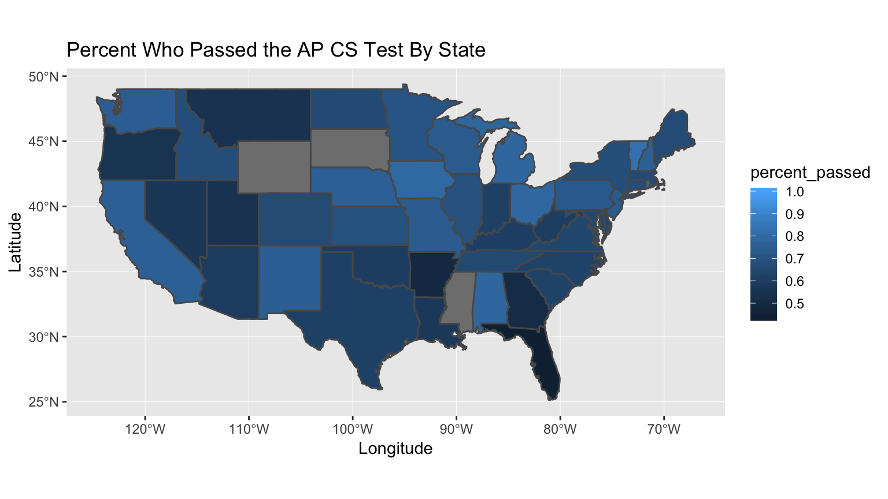

A major in Computer Science results in one of the highest salaries, with graduates having an average entry-level salary of $65,9001 and people at the height of their career making an average of $110,100 2. But high school students who don’t have access to Computer Science courses may not see it as a viable path because they don’t feel that they have the tools to succeed. This is especially harmful to students from lower income families, because while they would benefit the most from obtaining a well paying job, they also have the most obstacles stopping them from achieving this goal. We want to look at if income has an impact on the percent of people who pass their AP Computer Science tests.
In the grand scheme of things, income does have an impact on AP test scores. In 2017, the price of each AP exam administered in the U.S. was $94, and this was a $2 increase in price from 2016. Access to AP exam testing puts low-income students at a severe disadvantage. Statewide, one in 10 students from low-income homes will take an AP course, compared to one in 4 students from medium to high income homes. This is just looking at taking the courses, but how does the stat change when it comes to taking the AP exam? Over 1.1 million students take at least one AP exam a year in the U.S. alone, and of that number, more than 554,500 test-takers were categorized as low-income.

Which Computer Science Jobs Have the Highest Salaries, University of Wisconsin.↩
Which Computer Science Jobs Have the Highest Salaries, University of Wisconsin.↩